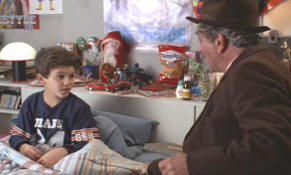
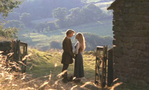
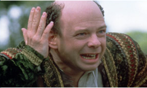
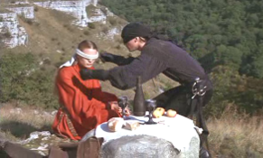
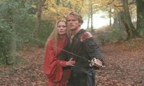
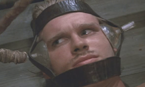
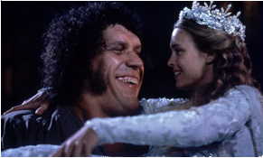
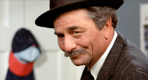

This beloved classic fairytale begins with a grandfather reading his favorite book “The Princess Bride” to his hard-to-impress grandson. This book, he promises, has everything – “Fencing. Fighting. Torture. Revenge. Giants. Monsters. Chases. Escapes. True love. Miracles.” – and all that he promised comes to life before the boy’s enchanted eyes as his grandfather reads him the adventures of Buttercup, the most beautiful woman in the world, and Westley, the man she loves.


Buttercup lives on a farm in the fairy-tale kingdom of Florin. She delights in ordering the farm hand Westley to perform chores for her. Westley’s only answer is “As you wish.” Eventually Buttercup realizes he really means “I love you”, and she admits her love for him. Westley soon leaves to seek his fortune so that they can marry. She receives word that Westley’s ship was attacked by the Dread Pirate Roberts, who is notorious for leaving no victim alive. Five years later, believing Westley to be dead, Buttercup reluctantly gets engaged to Prince Humperdinck, heir to the throne of Florin.
Before the wedding, Buttercup is kidnapped by a trio of outlaws (The Brute Squad): a Sicilian criminal genius named Vizzini, Spanish fencing master Inigo Montoya who is seeking revenge on a man with six fingers on his right hand who killed his father, and a gigantic Turkish wrestler named Fezzik who likes to rhyme. They are pursued by two parties: one consists of Prince Humperdinck and a number of soldiers; the other, a single masked man in black. The man in black outpaces the royal rescue party and almost catches the outlaws at the Cliffs of Insanity.


Having captured Buttercup, the man in black says that he is the Dread Pirate Roberts. Thinking he is Westley’s murderer, an enraged Buttercup shoves him into a gorge, yelling “You can die too, for all I care!” only to hear him reply “As you wish!” Realizing that he is actually Westley, she dives into the gorge after him. When they reach the bottom, bruised but alive, Westley tells her that the Dread Pirate Roberts attacked his ship, but made Westley his apprentice after hearing of the depths of his love for Buttercup. Eventually, Roberts secretly retired, passing Westley his name. The couple travel through the dreaded Fire Swamp to evade Humperdinck’s rescue party, but end up being attacked by several Rodents of Unusual Size (ROUSes), which Westley manages to defeat.
Upon exiting, they are captured by Humperdinck and the menacing six-fingered Count Tyrone Rugen. Westley, who had learned of Inigo’s quest for revenge against his father’s six-fingered assassin during their duel, notices Rugen’s six-fingered right hand and tells him, “Someone was looking for you.” In response, Rugen knocks him unconscious. Buttercup agrees to return with Humperdinck in exchange for Westley’s release, but instead he is brought to Rugen’s torture chambers.


On the day of the wedding, The Brute Squad empties the forest of all but one occupant: Inigo. Inigo learns about Rugen from Fezzik and decides to kill him. Having been impressed with Westley’s skill in outmaneuvering them during their previous encounter, Inigo and Fezzik decide that their only chance at penetrating the castle’s defenses is by enlisting Westley’s assistance. While searching for Westley, Inigo and Fezzik find Westley’s tortured body and bring it to the local magician Miracle Max and his wife Valerie, who explain that Westley is only “mostly dead.” They revive Westley, initially to a state of heavy paralysis, in order to satisfy a grudge against Humperdinck.
Westley, Inigo, and Fezzik invade the castle, and Humperdinck orders the wedding ceremony shortened. Inigo pursues Rugen through the castle. Rugen admits that he killed Inigo’s father, and they duel. Although Inigo is injured almost to defeat, his sense of revenge rekindles his energy and he kills Rugen. Westley reaches Buttercup, who has decided to commit suicide, and assures her that her marriage is a sham because in the shortened ceremony she never said “I do.” Still partly paralyzed, Westley bluffs his way out of a sword fight with Humperdinck, whom Buttercup then ties to a chair. As the party rides off on four white horses conveniently discovered by Fezzik, Westley offers the role of Dread Pirate Roberts to Inigo who, finding himself suddenly out of the revenge business, needs a new purpose in life.


Upon finishing the story, the grandfather gets up to leave. The grandson”having grown more interested throughout”asks his grandfather to read it to him again the following day. The grandfather replies, “As you wish.”